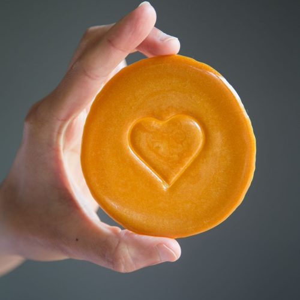

Dalgona
달고나
Ingredients
makes 1 cookie
- 2 Tbsp White Sugar
- 1/4 tsp Baking Soda
- 7 to 8 nuts (almonds, cashew, pistachios, or peanuts), optional
Directions
- If you use nuts, place several on a baking sheet lined with parchment paper, in a circle about 2 inches diameter
- Put the sugar in a stainless steel ladle (or small pan) over low heat. When the sugar starts melting, stir it with a long-handled stainless or wooden spoon so it melts evenly and doesn’t burn. Control the heat by lifting the ladle far from the heat or bringing it closer, as needed.
- Stir the melting sugar until it turns into a smooth, clear liquid with no lumps.
- Add baking soda and continue stirring. It will expand and change from light brown to creamy golden beige and then it will expand three times in size.
- Quickly drop the hot candy on top of the nuts. Let it cool down for about 10 minutes.
- Serve right away.
 Brian S Park
Brian S Park